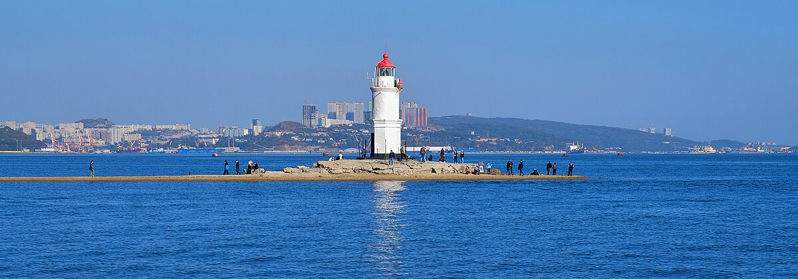
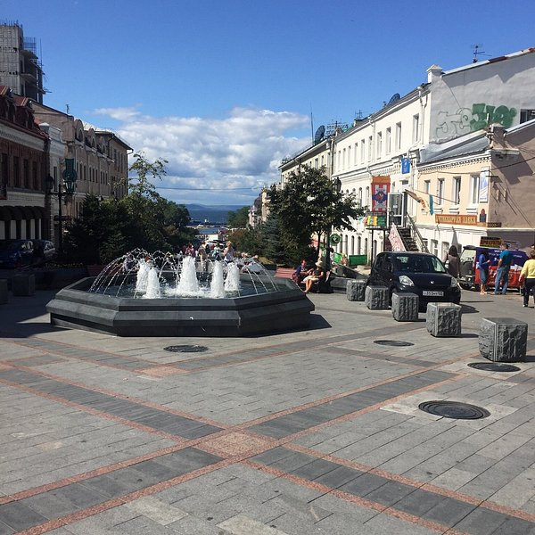
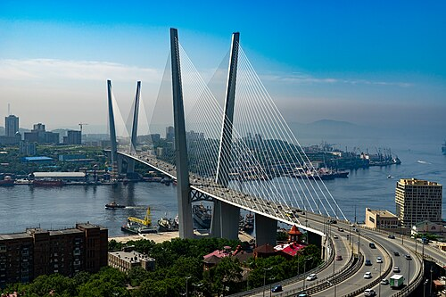

Золотой мост — один из символов современного Владивостока, вантовый мост через бухту Золотой Рог, открытый в
2012 году к саммиту АТЭС. Его главный пролёт длиной 737 метров делает его одним из самых больших вантовых мостов
в мире. Две высокие опоры-пилоны высотой 226 метров видны из многих точек города и стали его визитной карточкой.
Особенно впечатляюще мост выглядит вечером, когда включается эффектная подсветка, превращая инженерное
сооружение в произведение искусства.Мост соединил центр города с его южными районами, значительно улучшив
транспортную доступность и сократив время в пути. Для жителей и гостей Владивостока он стал не только важной
транспортной артерией, но и популярной смотровой площадкой — с моста открываются потрясающие виды на город и
бухту.

Русский мост — ещё одно грандиозное инженерное сооружение, построенное к саммиту АТЭС-2012, соединяет
материковую часть Владивостока с островом Русский. Это самый длинный вантовый мост в мире с главным пролётом
длиной 1104 метра — впечатляющее достижение российской инженерии. Высота опор составляет 324 метра, что делает
их одними из самых высоких мостовых конструкций на планете.
До строительства моста остров Русский был труднодоступен, и добраться туда можно было только на пароме. Русский
мост не только решил транспортную проблему, но и открыл новые возможности для развития острова, где расположен
кампус Дальневосточного федерального университета. Переезд по мосту над проливом Босфор Восточный на высоте
более 70 метров над водой — незабываемое впечатление, особенно в ясную погоду, когда видны просторы Японского
моря.

Владивостокская крепость — уникальный комплекс фортификационных сооружений, создававшийся с 1870-х по 1918 год
для защиты главной военно-морской базы России на Тихом океане. Это одна из самых больших и хорошо сохранившихся
приморских крепостей в мире, включающая десятки фортов, батарей и укреплений, расположенных на сопках вокруг
города. Массивные каменные и бетонные сооружения, подземные ходы и артиллерийские позиции производят сильное
впечатление своими масштабами и инженерной мыслью того времени.
Сегодня Владивостокская крепость является музеем под открытым небом и объектом культурного наследия федерального
значения. Многие форты открыты для посещения — здесь можно прогуляться по казематам, увидеть старинные орудия и
ощутить атмосферу военной истории. Особенно популярны у туристов форты на Русском острове и батарея
Новосильцевская, откуда открываются великолепные панорамные виды на город и море.